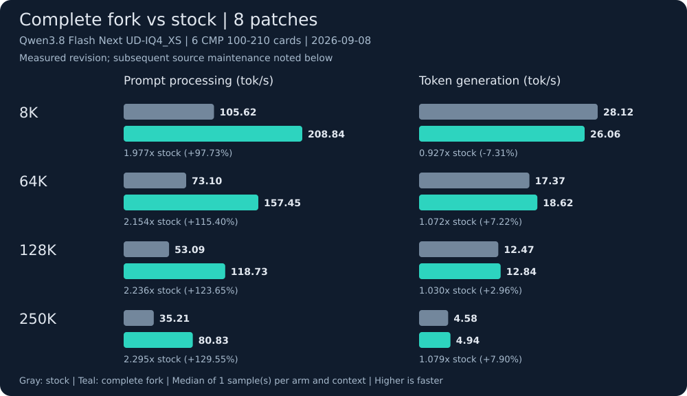

Promoted patches¶
Complete fork versus stock¶

Model: Qwen3.8 Flash Next UD-IQ4_XS. Hardware: 6 native CMP 100-210 cards. Measured: 2026-09-08 (America/Indiana/Indianapolis).
Coverage: 8 patches; stock 4d9176092d00, fork 63a8992d5b22. Median of 1 sample(s) per arm/context; exactly 256 generated tokens with byte-exact output.
Source maintenance after measurement: The measured Linux build is 63a8992d5b22. Subsequent commit 4f7bbe595be9 adds GGML_API visibility declarations and includes ggml.h for Windows DLL exports; it changes no selector implementation or CUDA kernel. Source review supports retaining these eight-patch Linux measurements, but the later revision was not benchmarked and these results make no Windows performance claim.
| Prompt tokens | Server context | Prefill: stock → fork (tok/s) | Generation: stock → fork (tok/s) | Request time change |
|---|---|---|---|---|
| 8,192 | 8,448 | 105.62 → 208.84 | 28.12 → 26.06 | -43.42% |
| 65,536 | 66,048 | 73.10 → 157.45 | 17.37 → 18.62 | -52.81% |
| 131,072 | 131,328 | 53.09 → 118.73 | 12.47 → 12.84 | -54.85% |
| 250,000 | 250,368 | 35.21 → 80.83 | 4.58 → 4.94 | -56.05% |
Negative request time changes mean faster completion. Prompt processing gains are separate from generation speed.
Copyable llama.cpp commands¶
Set MODEL to the first GGUF shard and CTX to a server context from the table. Set CUDA_VISIBLE_DEVICES to your six chosen cards before running either command. Run one server at a time.
Stock:
env llama-server \
--jinja \
--no-host \
--no-repack \
--load-mode mmap \
--lazy-mode auto \
--gpu-layers all \
--split-mode layer \
--batch-size 24576 \
--ubatch-size 512 \
--flash-attn on \
--cache-type-k f16 \
--cache-type-v f16 \
--no-context-shift \
--backend-sampling \
--spec-type none \
--metrics \
--parallel 1 \
--cache-ram 8192 \
--ui-mcp-proxy \
--webui-mcp-proxy \
--ctx-size "$CTX" \
--model "$MODEL" \
--port 8080 \
--host 127.0.0.1 \
--n-predict 16384 \
--device CUDA0,CUDA1,CUDA2,CUDA3,CUDA4,CUDA5 \
--tensor-split 1,1,1,1,1,1
Complete fork:
env GGML_CUDA_MAPPED_HOST_BRIDGE=1 GGML_CUDA_PROMPT_GRAPH_CAPTURE_SEED=1 GGML_SCHED_DEVICE_MASK=1 LLAMA_MODEL_LOAD_PARALLEL=1 llama-server \
--jinja \
--no-host \
--no-repack \
--load-mode mmap \
--lazy-mode auto \
--gpu-layers all \
--split-mode layer \
--batch-size 24576 \
--ubatch-size 512 \
--flash-attn on \
--cache-type-k f16 \
--cache-type-v f16 \
--no-context-shift \
--cuda-mmq force \
--backend-sampling \
--spec-type none \
--metrics \
--parallel 1 \
--cache-ram 8192 \
--ui-mcp-proxy \
--webui-mcp-proxy \
--ctx-size "$CTX" \
--model "$MODEL" \
--port 8080 \
--host 127.0.0.1 \
--n-predict 16384 \
--device CUDA0,CUDA1,CUDA2,CUDA3,CUDA4,CUDA5 \
--tensor-split 1,1,1,1,1,1
Both binaries use CUDA 12.9.2, 70-real, GGML_NATIVE=OFF, CPU features SSE42 AVX AVX2 BMI2 F16C FMA, and identical runtime phase instrumentation. Stock uses upstream automatic MMQ routing; the fork enables its documented MMQ route and selectors.
Completion request settings (the harness supplies an exact-length tokenized prompt):
{
"cache_prompt": false,
"ignore_eos": true,
"n_predict": 256,
"seed": 1234,
"stream": false,
"temperature": 0,
"top_k": 1
}
- Matched requests and byte-exact outputs establish this measured comparison, not exhaustive numerical equivalence.
- Single samples do not establish repeatability or statistical significance.
- Request wall time is measured after model readiness; it excludes startup and is not time to first token.
- Both arms include identical runtime phase instrumentation; stock has none of the 8 optimization-series patches.
Benchmark details · Machine-readable measurements
Only permanently adopted patches appear here. Each entry links its source patch and measured data, including regressions and validation limits. Human acceptance does not imply statistical significance.
The benchmark guide explains the linked measurements. The machine-readable index contains the same promoted entries.
Inherited entries retain the date recorded in their original patch headers. Entries that share that date follow their preserved application order in the public patch series.
-
SM70 D256 shared Q and unit rescaling preserve output through 250Kkept
The combined shared-Q and unit-rescale patch was accepted after review of its gains, regressions and measurement limits. All four primary contexts preserved exact 256-token output. At 250K, observed request wall time was 2.677% lower than the original saved reference. These single samples do not establish statistical repeatability or native kernel attribution.
-
DP4A MMQ routingkept
Adds a selectable DP4A MMQ route for tested quantized SM70 prefill, where the automatic policy chose the generic FP16 tensor-core path. One matched six-card configuration measured 2.36x prefill throughput at 128K; this is not a decode claim.
-
Extends the forced DP4A MMQ configuration to the Q4_K and Q5_K quantizations that SM70 previously left on the fallback path. The recorded effect was context-dependent: about 33.7% at a 4K prompt and 0.09% at an exact 100K prompt.
-
Overlaps independent per-GPU model uploads using positional reads instead of serially sharing one file offset. Matched cold-start controls were 51-59% faster; it is a readiness improvement, not token-generation throughput.
-
Makes no-P2P CUDA handoffs explicit through scheduler-visible ownership and a fixed four-slot mapped-pinned staging bridge. Event-ordered reuse preserves lossless cross-card transfers for boundaries up to 64 MiB.
-
Research selector registrykept
Adds runtime-switchable research selectors and activation reporting, so a configured selector whose implementation was dropped cannot silently appear enabled. The registry is infrastructure: it changes no behavior by itself.
-
Captures and instantiates a prompt graph executable on first observation without launching it; only later matching observations replay it. This avoids replaying a mutable first observation from an unproven executable. Recorded throughput effects varied by model family, with a small batch-one decode cost.
-
Device-side mask expansionkept
Publishes a compact row-visibility hint and rebuilds the expanded attention mask on the destination GPU, removing repeated host uploads rather than compressing them. It covers both the causal mask and sparse-attention block bias.